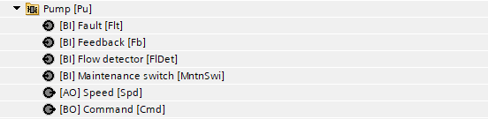
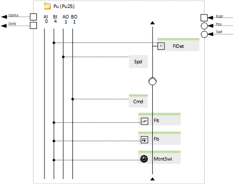
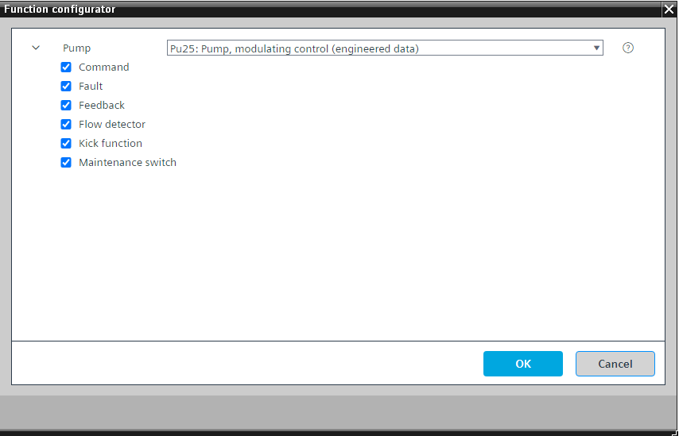

[Pu25] 泵，调节控制
Program block, name / node subtype: [Pu25] Pump, modulating control
Library hierarchy: Universal equipment
Family: Pu
项目树 | 图表 |
|---|---|
|
 |  |
Configurator


程序块存储在没有 I/Os. 的库中 使用auto-create and auto-connect函数创建 I/Os 和 /or 将它们连接到接口块，例如 R_A、CMD_B。或者，从包含库中预定义 I/Os 的文件夹中取出 I/Os，并从工厂中取出 /or，并将它们连接到接口块。
控制变速泵。
该程序块具有以下可选功能：
Option: Command (1xBO)
启用变速驱动器。
一些电机控制单元，例如一些 EC 电机，只需要模拟信号，例如 0-10 V，不需要二进制输出。
Option: Fault (1xBI)
从泵控制单元读取故障信号并生成警报。
Option: Feedback (1xBI)
读取反馈信号（例如来自泵控制单元的反馈信号），如果在泵必须运行时缺少反馈，则会生成警报。
Option: Flow detector (1xBI)
读取来自流量检测器的信号，如果泵必须运行时流量缺失，则会生成警报。
Option: Kick function
通过生成一个脉冲，在最短关闭时间过后，在配置的时间以定义的脉冲长度启动泵，从而防止停机损坏。
This is configured in the program.
Option: Maintenance switch (1xBI)
读取维护开关的信号并产生警报。如果激活，则泵的输出将以非常高的优先级（优先级 2）停止。
姓名 | 描述 | 类型 | 报警/通知类 | 趋势/类型 | |
|---|---|---|---|---|---|
Cmd | Command | BO：二进制输出 | No | 是的，4 | |
Flt | Fault | BI：二进制输入 | Yes, 4/5 | No | |
MntnSwi | Maintenance switch | BI：二进制输入 | 是的，5 | No | |
FlDet | Flow detector | BI：二进制输入 | 是的，4 | No | |
Fb | Feedback | BI：二进制输入 | 是的，4 | No | |
描述 |
|---|
Kick function |